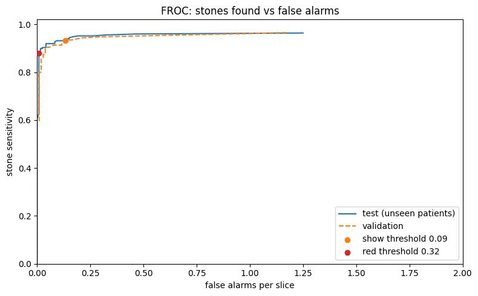
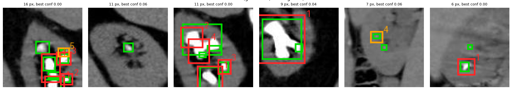
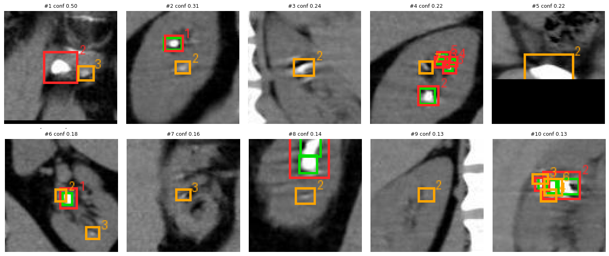

ML Capstone · Medical imaging
Kidney Stone
Second Reader
Helping the doctor catch the stone they would miss, and measuring honestly how often it does.
[Your name] · [Date]
Slide 1 speaker notes
Hi, I’m [name]. My project is a second reader for kidney stones on CT: a model that points at stones so the doctor misses fewer of them. The part I’m proudest of is not the model, it’s how I measured it.
The project in one slide
A second reader that points at kidney stones on CT
Input
One coronal non-contrast CT slice of the kidneys.
Output
Every candidate stone boxed and numbered. Red is confident; orange means look closer.
On new patients
Finds 93 of every 100 stones, with about one wrong box every 7 slices.
Slide 2 speaker notes
In one sentence: this project is a second reader. You give it a CT slice of the kidneys, it boxes every stone it sees, and on patients it has never seen it finds 93 of every 100 stones while drawing only about one wrong box every seven slices. The rest of the talk explains why that matters, how I built it, and how I know those numbers are honest.
The pain point
The first stone is easy to see.
The next one gets missed.
10 px
median stone size on a 391 × 320 slice
52%
of slices hold two or more stones
13
stones in the most crowded slice
Source: audit of 778 coronal non-contrast CT slices, 1,699 labeled stones
Slide 3 speaker notes
Kidney stones on CT are tiny. Half of them are 10 pixels or less on these slices. And more than half of the slices have two or more stones. The first stone grabs your attention; the second and third are the ones a tired doctor misses at 3 a.m. A missed stone matters: the count and location change whether the patient goes home with painkillers or needs a urologist.
The user
The doctor reading the scan
Who
A radiologist or ER doctor reading a non-contrast CT for suspected renal colic, often alone on a night shift.
What they do
- Open a coronal slice.
- See every candidate stone boxed, numbered and scored.
- Accept or reject each box, then count the stones.
It proposes. The doctor decides.
Red: right 9 times in 10
Orange: look closer
Slide 4 speaker notes
The user is the doctor reading the CT. The tool never diagnoses. It puts a numbered box on every candidate stone. A red box was right at least 9 times in 10 on validation, so it can be accepted at a glance. An orange box is the model saying “please look closer”. The doctor accepts or rejects each one and counts the stones.
Framing the problem
Four choices, all from the pain point
| We chose | Because |
|---|---|
| Detection, not yes/no classification | The pain is the missed second stone: the doctor needs where and how many. |
| Score per stone, not per image | An image with 4 stones and 1 missed is still a miss for the patient. |
| Split by patient, not by image | The real question is how it does on a patient it has never seen. |
| High sensitivity, few false alarms | A missed stone costs more than a box to dismiss, but too many boxes and doctors stop looking. |
Constraints: one day, one person, a free Colab T4 GPU, 778 labeled slices
Slide 5 speaker notes
Framing is where the medical problem becomes an ML problem. Because the pain is the missed second stone, this is object detection, not classification. Because one missed stone matters, I count per stone. Because a hospital cares about new patients, I split by patient. And because a doctor will ignore a noisy tool, the goal is high sensitivity with few false alarms.
The pipeline
From CT slice to second reading in six steps
1 · Acquisition
Coronal non-contrast CT, cropped to the kidneys, 391 × 320 px. Stones boxed by an annotator.
2 · Curation
Merge augmented copies. Recover 256 scan sessions from the DICOM acquisition time.
3 · Patient-level split
70 / 15 / 15 by scan session. No patient appears in two sets.
4 · Detection model
YOLOv8s pretrained on COCO, 960 px input, flip, rotation and mosaic augmentation.
5 · Post-processing
Merge overlapping boxes. Two thresholds learned on validation decide red, orange or hidden.
6 · Evaluation and delivery
Per-stone metrics and FROC on unseen patients, then a Gradio second-reader app.
Slide 6 speaker notes
Six steps, in medical imaging terms. Acquisition: coronal non-contrast CT, the standard scan for stones. Curation: the dataset stored training slices twice, and the DICOM IDs carry the acquisition time, which lets me rebuild 256 CT exams. Then a split by patient, a pretrained detector at 960 pixels, post-processing that merges duplicate boxes and sorts them into red, orange or hidden, and finally evaluation on unseen patients and a small app.
The data
What the dataset holds, and what it hid
778
unique slices in 1,300 files
256
scan sessions, our stand-in for patients
1,699
labeled stones, one class
1
slice without a stone
The published split mixes patients
93 of 256 scan sessions have slices in both train and test, and 68 of 123 published test slices come from patients seen in training. So we split by patient.
Roboflow “TEZ_ROI_AUG” v3, CC BY 4.0 · Philips CT, Aug 2019 to Dec 2020
Slide 7 speaker notes
Before training I audited the data. 1,300 files are 778 real slices. The slice IDs contain the acquisition time, which groups them into 256 CT exams. Only one slice has no stone, so specificity can’t be measured. And the published split mixes patients: 68 of its 123 test slices come from patients the model trained on. I checked how much that matters in a first run: the effect was small and mixed up with how crowded those slices are, but only a split by patient answers the clinical question, so that is what every result here uses.
Training and tuning
Tuned for the doctor’s workload, not the leaderboard
| Test set, unseen patients | v1 | v2 (final) |
|---|---|---|
| Input size | 640 px | 960 px |
| Box merging (NMS IoU) | 0.7 | 0.3 |
| Show threshold | 0.020 | 0.089 |
| Stone sensitivity | 94.8% | 93.1% |
| False alarms per slice | 0.73 | 0.13 |
| mAP50 | 0.732 | 0.632 |
v1 problem: stacks of 5 to 10 boxes on one stone, and a threshold so low (0.02) that most boxes were orange.
v2 fix: merge overlapping boxes and learn the red cutoff from validation. False alarms fell about 5 times.
The cost: mAP50 fell 10 points. The 960 px input did not raise validation mAP (0.737 to 0.713).
v2: 60 epochs, 29 min on a T4, training loss converged · v1 scored with a stricter centre-only hit rule, so its row is approximate
Slide 8 speaker notes
Tuning was driven by what the doctor sees. Version 1 drew stacks of near-identical boxes on each stone, and its threshold was so low that almost everything was orange. Version 2 merges overlapping boxes, learns the red cutoff on validation data, and trains at 960 pixels. False alarms per slice fell from 0.73 to 0.13 at about the same sensitivity. Honest cost: the ML metric mAP50 dropped from 0.73 to 0.63, and the bigger input did not help on validation. For a second reader, I chose the version doctors would keep using.
How we measure it
Metrics a doctor would ask for
Stone sensitivity
Of all real stones, the share that got a box.
False alarms per slice
Boxes pointing at nothing that the doctor has to dismiss.
Precision
Of all boxes shown, the share that finds a stone.
All stones found
Share of slices where not one stone was missed, so the count is right.
FROC curve
Sensitivity against false alarms at every threshold, the radiology standard.
mAP50
The standard ML detection score, so results compare with other projects.
A hit = box centre inside the stone, or overlap IoU ≥ 0.1 · thresholds chosen on validation only · 95% intervals resample whole patients
Slide 9 speaker notes
Accuracy alone would be meaningless here, because every slice has a stone. So I measure what a doctor would ask: how many stones does it find, how many wrong boxes do I have to dismiss, can I trust a box, and does it get the count right. The FROC curve shows all thresholds at once, and mAP50 is there so ML people can compare. A box counts as finding a stone if its centre is inside the stone or it overlaps it a little, because on a 6 pixel stone a 3 pixel shift should not count as a miss.
Results · 120 slices from 39 unseen patients
93% of stones found, few false alarms
93.1%
stone sensitivity (95% CI 88 to 98%)
0.13
false alarms per slice
90.8%
of slices with every stone found
0.63
mAP50 (ML metric)
| Boxes shown | Sensitivity | False alarms / slice | Precision | All found |
|---|---|---|---|---|
| Red + orange (default) | 93.1% | 0.13 | 81% | 90.8% |
| Red only | 87.9% | 0.008 | 94% | 82.5% |
Test set: 248 stones · show threshold 0.089 and red threshold 0.321, both chosen on validation
Slide 10 speaker notes
On 39 patients the model never saw, it finds 93% of stones, with a confidence interval of 88 to 98% because the test set is small. It draws 0.13 false alarms per slice, about one wrong box every seven or eight slices, and gets every stone in 91% of slices. Red boxes alone are very clean: one false red box in all 120 test slices. Orange boxes add the last 5% of stones. mAP50 of 0.63 is the ML score; it is stricter about box placement than a doctor needs to be.
Evaluation
The trade-off, and why we trust it

Validation and test agree. The dashed and solid curves overlap, so thresholds chosen on validation carry over to new patients.
Red dot: red boxes alone find 88% of stones at almost no false alarms.
Orange dot: adding orange boxes reaches 93% at 0.13 false alarms per slice.
Slide 11 speaker notes
This is a FROC curve, the standard way radiology AI reports lesion detection. Moving right lowers the threshold: more stones found, more false boxes. The important part is that the validation curve and the test curve sit on top of each other. That means the thresholds I chose on validation behave the same way on new patients. The red dot is the confident boxes; the orange dot adds the look-closer boxes.
Error analysis
It misses small stones and crowded kidneys
| Stone size | Median | Found |
|---|---|---|
| Small | 6 px | 84% |
| Medium | 10 px | 96% |
| Large | 19 px | 99% |
| Stones in slice | Slices | All found |
|---|---|---|
| 1 or 2 | 90 | 97% |
| 3 to 4 | 20 | 90% |
| 5 or more | 10 | 40% |

Slide 12 speaker notes
Where does it fail? Small stones: 84% found, against 99% for large ones. Clinically that is the less harmful miss, because small stones usually pass on their own. Crowded kidneys: with five or more stones it gets every stone in only 4 of 10 slices. The pictures show the six largest misses: small stones, stones inside clusters, and one small label drawn inside a large stone’s label, which is a labeling quirk rather than a real miss.
Label audit
Are the false alarms really wrong?

2 look like real stones the labels missed (#1, #5)
2 are boxes just beside a labeled stone (#6, #10)
6 are faint spots or vessel-like streaks: mimics or noise
The 10 most confident false alarms on the test set · author’s visual read, not radiologist-verified
Slide 13 speaker notes
I looked at the ten most confident false alarms. Two are bright, round spots that look like real stones with no label: the model may be right and the label wrong. Two are boxes sitting just beside a labeled stone. Six are faint spots or streaks that look like vessels, the kind of stone mimic a radiologist knows well. This is my own reading, not a radiologist’s, but it says the true false-alarm rate is probably a little lower than measured.
Clinician outcome
What it means at the reading desk
93 of 100 stones get a box
The 7 it misses are mostly small, the kind that usually pass on their own.
One wrong box every 7 slices
Few enough that the doctor keeps trusting it instead of switching it off.
Red boxes can be trusted
One false red box in 120 slices. Orange boxes ask for a second look and catch 5% more stones.
The second stone
Every stone found in 97% of slices with 1 or 2 stones, 90% with 3 to 4. Weak above 5.
Expected benefit: fewer missed stones and faster confirmation. Not yet proven with doctors: that needs a reader study.
Slide 14 speaker notes
For the doctor: 93 of 100 stones get a box, and the misses are mostly the small ones that tend to pass anyway. One wrong box every seven slices is low enough that it won’t be ignored. Red boxes are almost never wrong, so they confirm the obvious stones fast, and orange boxes point at the ones worth a second look. For the pain point, the second stone: in slices with one to four stones, it gets every stone 90 to 97% of the time. What I have not shown is that doctors actually miss fewer stones with it. That needs a reader study: the same doctors reading with and without the tool.
Before real use
Eight things to fix before a real clinic
Specificity unknown
No stone-free slices, so false alarms on healthy patients are unmeasured.
One source
One center, one vendor, 2019 to 2020. Needs external validation.
2D, not 3D
Doctors scroll the whole volume; one stone spans several slices.
No size in mm
Pixel spacing was lost, so it cannot guide pass-or-treat decisions.
Kidney crop only
Ureteral stones, the usual cause of colic, are out of scope.
Noisy labels, mimics
One annotator; some stones unlabeled. Phleboliths can fool it.
Not tested with doctors
Needs a reader study: doctors reading with and without it.
Bias and regulation
Doctors may trust its misses. It is a medical device and needs approval.
Slide 15 speaker notes
Eight honest limits. The biggest: every slice has a stone, so I can’t say how it behaves on healthy patients. It comes from one hospital and one scanner. It works on 2D slices, not the whole scan. It can’t measure stones in millimetres, it only sees the kidneys, and the labels are noisy. I measured the model alone, not doctors using it: proving the benefit needs a reader study. And a real deployment needs regulatory approval and a plan against automation bias.
Live demo
It proposes.
The doctor decides.
Upload a coronal slice. Get every candidate stone boxed and numbered, a stone count, and a confidence for each one.
Red: right 9 times in 10
Orange: look closer
Slide 16 speaker notes
Switch to Colab. Run the last cell: it opens the Gradio app. Open demo_images/001_7stones.jpg: the label says 7 stones, see how many it finds. Point out the numbered boxes, the red and orange count, and one orange box: “the model is asking the doctor to look closer.” Move the slider from 0.089 up to 0.32 to show only red boxes, then back down: the same trade-off as the FROC curve. Close with: it proposes, the doctor decides.